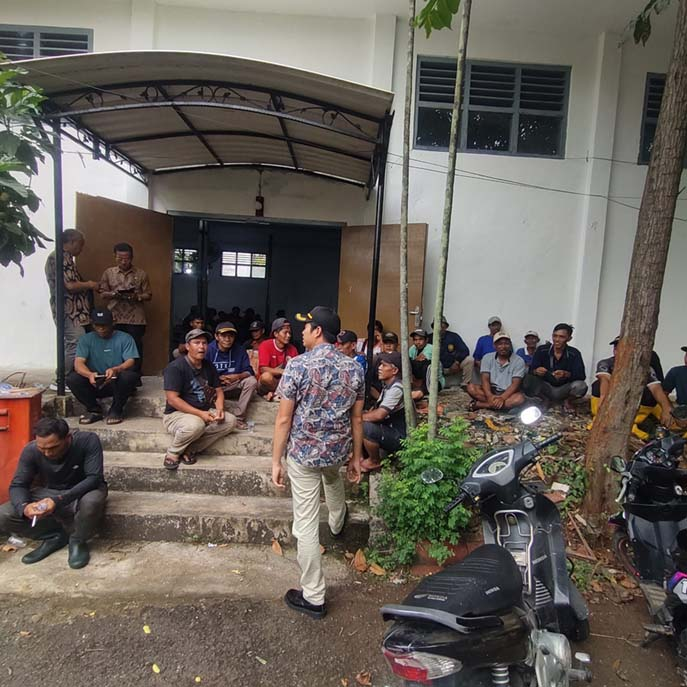

Berita Utama

Rapat Penanganan Sampah Kelurahan Kelapa Dua
Tanggal, 23 April 2026
MediaKada | Kelurahan Kelapa Dua, menggelar rapat khusus penanganan sampah di Jalan Inspeksi Kali Pesanggrahan bersama petugas pengangkut di wilayah Kelapa Dua. Dibuka langsung oleh Lurah Kelapa Dua, Elfin Ridho Putra. Kegiatan ini berlangsung di Aula Komplek Yonhub RW 04, Kelurahan Kelapa Dua Kecamatan Kebon Jeruk Jakarta Barat, pada Kamis (23/4), mulai pukul 10.00 WIB hingga selesai.
Dalam sambutannya, Lurah menyampaikan latar belakang pelaksanaan rapat, yakni meningkatnya permasalahan sampah yang menumpuk di sejumlah titik sehingga perlu segera ditangani secara sistematis. Dalam arahannya, Lurah menegaskan komitmen untuk melakukan perbaikan sistem pengelolaan sampah agar lebih efektif,dan berkelanjutan.
Beliau juga menyoroti dan mendalami keengganan sebagian petugas pengangkut sampah yang beroperasi di wilayah Kelurahan Kelapa Dua untuk membuang sampah di Jalan Inspeksi. Menindaklanjuti hal tersebut, Kepala Satuan Pelaksana Lingkungan Hidup (Kasatpel LH) Kecamatan Kebon Jeruk menyatakan akan segera melakukan pembersihan terhadap tumpukan sampah di Jalan Inspeksi Kali Pesanggrahan Kelurahan Kelapa Dua.
Sebagai langkah awal disepakati sementara penerapan biaya operasional harian, sedangkan skema retribusi bulanan menunggu hasil kesepakatan lebih lanjut. Adapula usulan yang menjadi bahan pertimbangan untuk menghentikan sementara penarikan retribusi hingga sistem yang lebih baik dan transparan dapat dicapai.
Selain itu, diputuskan bahwa setiap hari Jumat dan Sabtu tidak akan dilakukan pengangkutan sampah. Sebagai gantinya, para petugas akan melaksanakan kerja bakti membersihkan sampah lama yang menumpuk. Lurah juga menghimbau warga untuk lebih aktif melakukan pemilahan sampah sejak dari rumah tangga, sehingga proses pengelolaan dapat berjalan lebih baik dan lingkungan tetap terjaga.
Hadir kegiatan tersebut antara lain, Lurah Kelapa Dua, Kasatpel Lingkungan Hidup Kecamatan Kebon Jeruk dan Jajaran, Sekretaris Kelurahan Kepala Seksi Pemerintahan, Kepala Seksi Ekonomi dan Pembangunan, Kepala Seksi Kesejahteraan Rakyat, serta Para Ketua RW, LMK, FKDM, Babinsa, Bhabinkamtibmas, PPSU, dan Petugas Pengangkut Sampah wilayah Kelurahan Kelapa Dua.
Dengan adanya tindak lanjut yang konkret, diharapkan langkah-langkah yang dihasilkan dalam kegiatan ini bisa menjadi awal perbaikan sistem pengelolaan sampah di Jalan Inspeksi Kali Pesanggrahan.
(LMK-08 Kelapa dua, photo by Angga)

Gulkarmat Jakarta Barat Bangun Hidran Mandiri di RW 08 Kelurahan Kelapa Dua